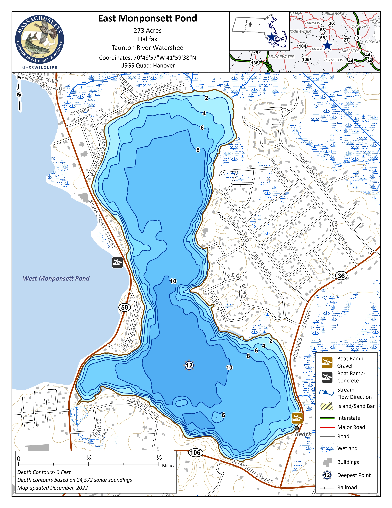

Club Waters
The following fishing spots are publically accessible. Many spots require a town permit to park. In Halifax, a town trash sticker will suffice in most cases. Always check current Massachusetts regulations before fishing — limits and seasons can change. Questions about access? Contact a club officer on the About page.
- Abington: Cleveland Pond
- Carver: Long Pond | Sampsons Pond
- East Bridgewater: Robbins Pond
- Halifax: East Monponsett | Silver Lake | West Monponsett
- Hanson: Burrage Pond | Stump Brook | West Monponsett
- Kingston: Silver Lake
- Pembroke: Furnace Pond | Stetson Pond
- Plymouth: Long Pond
- Plympton: Silver Lake
Burrage Pond
| Town | Hanson |
|---|---|
| Acres | Multiple impoundments — no confirmed single figure |
| Max Depth | ~4 ft (very shallow) |
| Species | Largemouth Bass, Chain Pickerel, Yellow Perch, White Perch, Black Crappie, Bluegill, Brown Bullhead |
| Stocked | Not a stocked water |
| Access | Burrage Wildlife Management Area — carry-in from Pleasant Street parking lot, Hanson |
| Parking | Free WMA lot off Pleasant Street (Route 58), Hanson — dawn to dusk |
| Boat Launch | No ramp — hand carry only (canoe/kayak) |
Notes: Both the upper and lower reservoirs are very shallow and heavily weeded — this is a canoe and kayak spot, not a powerboat destination. Chain pickerel and largemouth hold in the vegetation. Park at the Pleasant Street lot and carry in. Good early morning in spring before the weeds take over.
Cleveland Pond
| Town | Abington |
|---|---|
| Acres | |
| Max Depth | |
| Species | Largemouth Bass, Chain Pickerel, Black Crappie, Yellow Perch, Bluegill |
| Stocked | Verify at MassFishHunt before each season |
| Access | Ames Nowell State Park — off Linwood Street, Abington |
| Parking | Free state park lot off Linwood Street, Abington |
| Boat Launch | No ramp — non-motorized carry-in only |
Notes: A quiet, man-made pond inside Ames Nowell State Park. Non-motorized boats only — bring a canoe or kayak. Bass, pickerel, and crappie are the main targets. Sees light pressure compared to the bigger regional waters.
East Monponsett Pond
| Town | Halifax |
|---|---|
| Acres | ~239 |
| Max Depth | ~16 ft |
| Species | Largemouth Bass, Chain Pickerel, Yellow Perch, White Perch, Brown Bullhead, Bluegill |
| Stocked | Not a stocked water — verify at MassFishHunt before each season |
| Access | Public — East Pond boat ramp off Monponsett Street, Halifax |
| Parking | Lot at the public boat ramp |
| Boat Launch | Yes — ramp accommodates trailered boats |

Notes: East Monponsett is the larger of the two connected ponds, sitting mostly in Halifax. It is shallow and warm, which suits largemouth bass and chain pickerel through the summer. Early morning topwater presentations along the weed edges are productive for largemouth, while pickerel are found throughout the submerged vegetation. Yellow and white perch are consistent year-round. Water levels can drop in late summer — check conditions before launching a trailered boat. A channel connects East and West Monponsett; fish move freely between the two ponds.
Furnace Pond
| Town | Pembroke |
|---|---|
| Acres | 115 |
| Max Depth | ~9 ft |
| Species | Largemouth Bass, Chain Pickerel, Yellow Perch, White Perch, Black Crappie, Brown Bullhead, Bluegill, American Eel |
| Stocked | Not a stocked water |
| Access | Roadside car-top launch off Mattakeesett Street (Route 14), Pembroke |
| Parking | Roadside along Route 14 |
| Boat Launch | No formal ramp — car-top only |
Notes: One of the better bass ponds in the area. Very shallow for 115 acres, so weeds take over by midsummer. Car-top launch only off Route 14 — no trailer ramp. Prone to algae blooms in late summer. Strong reputation for large largemouth.
Long Pond (Plymouth)
| Town | Plymouth |
|---|---|
| Acres | ~227 |
| Max Depth | ~100 ft |
| Species | Smallmouth Bass, Largemouth Bass, Yellow Perch, White Perch, Rainbow Trout, Brook Trout, Brown Bullhead, White Sucker, American Eel |
| Stocked | Yes — Rainbow Trout and Brook Trout stocked spring and fall by MA DFW |
| Access | DCR paved boat ramp at 224 Clark Road, Plymouth |
| Parking | Free state lot at the ramp — approx. 29 trailer spaces |
| Boat Launch | Yes — paved DCR ramp, trailers accommodated; 50 HP motor limit |
Notes: One of the deepest ponds in southeastern Massachusetts — cold and clear, fed primarily by groundwater. Excellent trout fishing in spring and fall. Smallmouth bass are the main warmwater target. The DCR ramp off Clark Road is straightforward from Route 3.
Robbins Pond
| Town | East Bridgewater |
|---|---|
| Acres | 124 |
| Max Depth | ~10 ft |
| Species | Largemouth Bass, Chain Pickerel, Yellow Perch, White Perch, Black Crappie, Bluegill, Brown Bullhead, American Eel |
| Stocked | Not a stocked water |
| Access | Informal gravel launch off Pond Street, East Bridgewater |
| Parking | Roadside on Pond Street |
| Boat Launch | Informal gravel car-top launch only |
Notes: A quiet, overlooked pond on the East Bridgewater/Halifax line. Shallow and tea-colored water. Better for perch and pickerel than bass, though largemouth are present. Informal car-top launch off Pond Street — no amenities.
Sampsons Pond
| Town | Carver |
|---|---|
| Acres | 310 |
| Max Depth | ~14 ft |
| Species | Largemouth Bass, Chain Pickerel, Yellow Perch, White Perch, Bluegill, Brown Bullhead, American Eel |
| Stocked | Not a stocked water |
| Access | 27 Lakeview Street, Carver — paved town ramp |
| Parking | Small unpaved lot at ramp — Carver resident parking sticker required ($10/year at Town Hall) |
| Boat Launch | Yes — paved ramp, trailers accommodated |
Notes: Large and clear with a hard, sandy bottom — originally excavated for bog iron in the early 1800s. Bass grow to good size but the population is sparse; MassWildlife encourages catch-and-release. A Carver resident parking sticker is required — pick one up at Town Hall for $10.
Silver Lake
| Town | Halifax / Kingston / Plympton |
|---|---|
| Acres | 640 |
| Max Depth | ~80 ft |
| Species | Largemouth Bass, Smallmouth Bass, Chain Pickerel, Yellow Perch, White Perch, Brown Bullhead, American Eel |
| Stocked | Verify at MassFishHunt — reservoir status may affect stocking |
| Access | Shore fishing only — Silver Lake Sanctuary, off Barses Lane, Kingston. No boating permitted. |
| Parking | Small lot at Silver Lake Sanctuary (5–10 vehicles) |
| Boat Launch | None — no boating allowed (active drinking water reservoir) |
Notes: Silver Lake is Brockton's primary drinking water supply — no boating is permitted on the lake itself. Shore fishing is accessible from the Silver Lake Sanctuary off Barses Lane in Kingston. Verify current fishing access and any permit requirements with Kingston Town Hall before visiting.
Stetson Pond
| Town | Pembroke |
|---|---|
| Acres | 93 |
| Max Depth | 33 ft |
| Species | Largemouth Bass, Chain Pickerel, Yellow Perch, White Perch, Bluegill, Brown Bullhead, American Eel |
| Stocked | Not a stocked water |
| Access | Informal car-top launch off Plymouth Street, Pembroke |
| Parking | Limited roadside parking off Plymouth Street |
| Boat Launch | Informal dirt launch — car-top and canoe only |
Notes: Dark-watered and deeper than most ponds in the area. Low overall fish density, but what's in there tends to run large. Car-top only off Plymouth Street in Pembroke — limited parking.
Stump Brook
| Town | Hanson |
|---|---|
| Acres | N/A — stream |
| Max Depth | |
| Species | Chain Pickerel, Yellow Perch, Largemouth Bass, Brown Bullhead |
| Stocked | Not a stocked water |
| Access | Burrage WMA (Pleasant Street, Hanson) or Stump Brook Sanctuary (Elm Street, Halifax); by canoe from West Monponsett ramp |
| Parking | Burrage WMA lot off Pleasant Street, Hanson |
| Boat Launch | N/A — stream |
Notes: A warmwater stream connecting the Monponsett system to Burrage Pond. Best fished by canoe or kayak — put in at the West Monponsett ramp on Route 58 or carry in from the Burrage WMA. Chain pickerel and perch in the slower, weedy stretches.
West Monponsett Pond
| Town | Hanson |
|---|---|
| Acres | ~117 |
| Max Depth | ~13 ft |
| Species | Largemouth Bass, Chain Pickerel, Yellow Perch, White Perch, Black Crappie, Brown Bullhead, Bluegill, American Eel |
| Stocked | Not a stocked water |
| Access | Paved public boat ramp off Route 58 (north of White Island Road), Halifax |
| Parking | Free lot at the Route 58 boat ramp |
| Boat Launch | Yes — paved ramp with pier, trailers accommodated |
Notes: Shallower and quieter than East Monponsett. The connecting channel means fish move freely between the two ponds — a good option when the East side is crowded. Paved ramp off Route 58 on the Halifax side. Expect jet ski traffic on summer weekend afternoons.